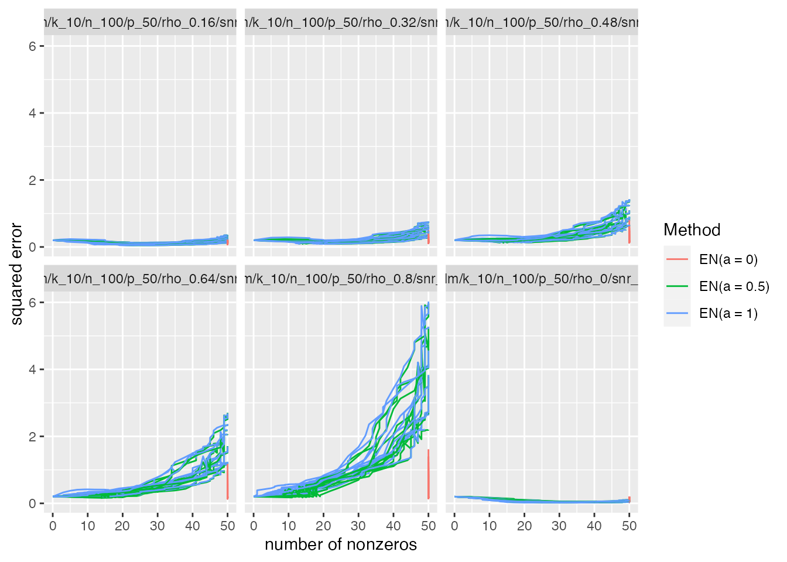
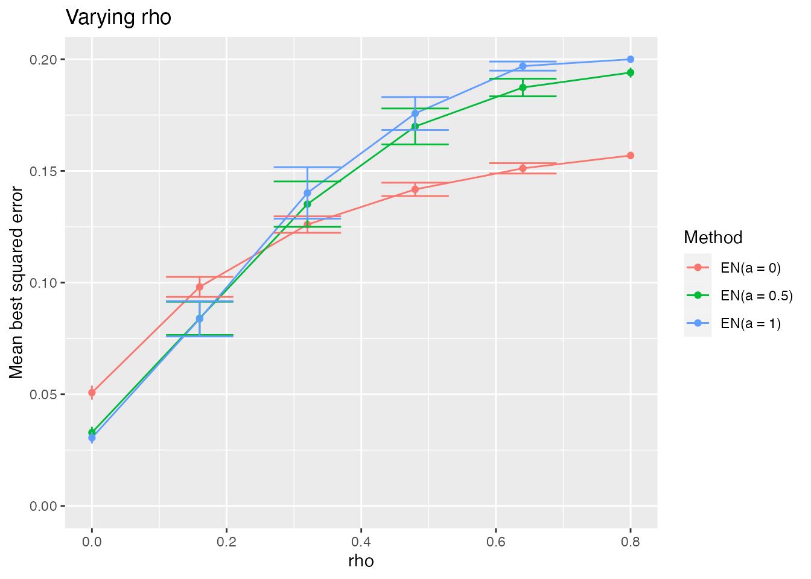
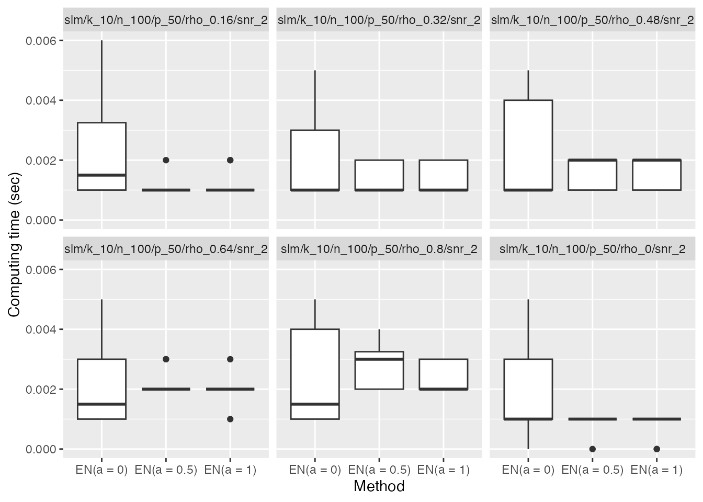
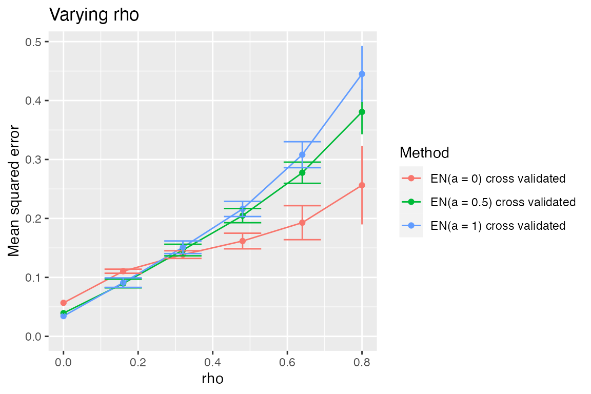

In this vignette, we perform a simulation with the elastic
net to demonstrate the use of the simulator in the case
where one is interested in a sequence of methods that are identical
except for a parameter that varies. The elastic net is the solution
\(\hat\beta_{\lambda,\alpha}\) to the
following convex optimization problem: \[
\min_{\beta\in\mathbb
R^p}\frac1{2}\|y-X\beta\|_2^2+\lambda(1-\alpha)\|\beta\|^2_2+\lambda\alpha\|\beta\|_1.
\]
Here, \(\lambda\ge0\) controls the overall amount of regularization whereas \(\alpha\in[0,1]\) controls the tradeoff between the lasso and ridge penalties. While sometimes one performs a two-dimensional cross-validation over \((\lambda,\alpha)\) pairs, in some simulations one might wish instead to view each fixed \(\alpha\) as corresponding to a separate version of the elastic net (each solved along a grid of \(\lambda\) values). Such a view is useful for understanding the effect \(\alpha\).
Main simulation
Understanding the effect of the elastic net’s \(\alpha\) parameter
We begin with a simulation showing the best-case performance of the elastic net for several values of \(\alpha\).
name_of_simulation <- "elastic-net"
sim <- new_simulation(name_of_simulation, "Elastic Nets") %>%
generate_model(make_sparse_linear_model_with_corr_design,
n = 100, p = 50, snr = 2, k = 10,
rho = as.list(seq(0, 0.8, length = 6)),
vary_along = "rho") %>%
simulate_from_model(nsim = 3, index = 1:4) %>%
run_method(list_of_elastic_nets,
parallel = list(socket_names = 2, libraries = "glmnet")) %>%
evaluate(list(sqr_err, nnz, best_sqr_err))In the above code, we consider a sequence of models in which we vary
the correlation rho among the features. For each model, we
fit a sequence of elastic net methods (varying the tuning parameter
\(\alpha\)). For each method, we
compute the best-case mean-squared error. By best-case, we mean \(\min_{\lambda\ge0}\frac1{p}\|\hat\beta_{\lambda,\alpha}-\beta\|_2^2\),
which imagines we have an oracle-like ability to choose the best \(\lambda\) for minimizing the MSE.
We provide below all the code for the problem-specific components. We
use the R package glmnet
to fit the elastic net. The most distinctive feature of this particular
vignette is how the list of methods list_of_elastic_nets
was created. This is shown in the Methods section.
plot_evals(sim, "nnz", "sqr_err")
The first plot shows the MSE versus sparsity level for each method (parameterized by \(\lambda\)). As expected, we see that when \(\alpha=1\) (pure ridge regression), there is no sparsity. We see that the performance of the methods with \(\alpha<1\) degrades as the correlation among features increases, especially when a lot of features are included in the fitted model.
It is informative to look at how the height of the minimum of each of the above curves varies with \(\rho\).
plot_eval_by(sim, "best_sqr_err", varying = "rho", include_zero = TRUE)
We see that when the correlation between features is low, the methods with some \(\ell_1\) penalty do better than ridge regression. However, as the features become increasingly correlated, a pure ridge penalty becomes better. Of course, none of the methods are doing as well in the high correlation regime (which is reminiscent of the bet on sparsity principle).
A side note: the simulator automatically records the computing time of each method as an additional metric:
plot_eval(sim, "time", include_zero = TRUE)
Results for Cross-Validated Elastic Net
We might be reluctant to draw conclusions about the methods based on the oracle-like version that we used above (in which each method on each random draw gets to pick the best possible \(\lambda\) value). We might therefore look at the performance of the methods using cross-validation to select \(\lambda\).
sim_cv <- sim %>% subset_simulation(methods = "") %>%
rename("elastic-net-cv") %>%
relabel("Elastic Nets with CV") %>%
run_method(list_of_elastic_nets + cv,
parallel = list(socket_names = 2, libraries = "glmnet")) %>%
evaluate(list(sqr_err, nnz))Reassuringly, the relative performance of these methods is largely the same (though we see that all methods’ MSEs are higher).
plot_eval_by(sim_cv, "sqr_err", varying = "rho", include_zero = TRUE)
Components
The most distinctive component in this vignette is in the Methods section. Rather than directly creating a Method object, we write a function that creates a Method object. This allows us to easily create a sequence of elastic net methods that differ only in their setting of the \(\alpha\) parameter.
Models
library(mvtnorm)
make_sparse_linear_model_with_corr_design <- function(n, p, k, snr, rho) {
sig <- matrix(rho, p, p)
diag(sig) <- 1
x <- rmvnorm(n, sigma = sig)
beta <- rep(c(1, 0), c(k, p - k))
mu <- as.numeric(x %*% beta)
sigma <- sqrt(sum(mu^2) / (n * snr)) # taking snr = ||mu||^2 / (n * sigma^2)
new_model(name = "slm", label = sprintf("rho = %s", rho),
params = list(x = x, beta = beta, mu = mu, sigma = sigma, n = n,
p = p, k = k),
simulate = function(mu, sigma, nsim) {
y <- mu + sigma * matrix(rnorm(nsim * n), n, nsim)
return(split(y, col(y))) # make each col its own list element
})
}Methods
library(glmnet)
make_elastic_net <- function(alpha) {
new_method(name = sprintf("en%s", alpha),
label = sprintf("EN(a = %s)", alpha),
settings = list(alpha = alpha, nlam = 50),
method = function(model, draw, alpha, nlam, lambda = NULL) {
if (is.null(lambda))
fit <- glmnet(x = model$x, y = draw, alpha = alpha,
nlambda = nlam, intercept = FALSE)
else
fit <- glmnet(x = model$x, y = draw, alpha = alpha,
lambda = lambda, intercept = FALSE)
list(beta = fit$beta, yhat = model$x %*% fit$beta,
lambda = fit$lambda, df = fit$df, alpha = alpha)
})
}
list_of_elastic_nets <- sapply(c(0, 0.5, 1), make_elastic_net)The function make_elastic_net takes a value of \(\alpha\) and creates a Method object
corresponding to the elastic net with that value of \(\alpha\).
In the second set of simulations, we studied cross-validated versions
of each elastic net method. To do this, we wrote
list_of_elastic_nets + cv. This required writing the
following MethodExtension object cv. The
vignette on the lasso has more about writing method extensions.
#' Make folds for cross validation
#'
#' Divides the indices \code{1:n} into \code{nfolds} random folds of about the same size.
#'
#' @param n sample size
#' @param nfolds number of folds
make_folds <- function(n, nfolds) {
nn <- round(n / nfolds)
sizes <- rep(nn, nfolds)
sizes[nfolds] <- sizes[nfolds] + n - nn * nfolds
b <- c(0, cumsum(sizes))
ii <- sample(n)
folds <- list()
for (i in seq(nfolds))
folds[[i]] <- ii[seq(b[i] + 1, b[i + 1])]
folds
}
cv <- new_method_extension("cv", "cross validated",
method_extension = function(model, draw, out,
base_method) {
nfolds <- 5
alpha <- base_method@settings$alpha
err <- matrix(NA, ncol(out$beta), nfolds)
ii <- make_folds(model$n, nfolds)
for (i in seq_along(ii)) {
train <- model
train@params$x <- model@params$x[-ii[[i]], ]
train@params$n <- model@params$x[-ii[[i]], ]
train_draw <- draw[-ii[[i]]]
test <- model
test@params$x <- model@params$x[ii[[i]], ]
test@params$n <- model@params$x[ii[[i]], ]
test_draw <- draw[ii[[i]]]
fit <- base_method@method(model = train,
draw = train_draw,
alpha = alpha,
lambda = out$lambda)
yhat <- test$x %*% fit$beta
ll <- seq(ncol(yhat))
err[ll, i] <- colMeans((yhat - test_draw)^2)
}
m <- rowMeans(err)
se <- apply(err, 1, sd) / sqrt(nfolds)
imin <- which.min(m)
ioneserule <- max(which(m <= m[imin] + se[imin]))
list(err = err, m = m, se = se, imin = imin,
ioneserule = ioneserule,
beta = out$beta[, imin],
yhat = model$x %*% out$beta[, imin],
alpha = alpha)
})Metrics
sqr_err <- new_metric("sqr_err", "squared error",
metric = function(model, out) {
colMeans(as.matrix(out$beta - model$beta)^2)
})
best_sqr_err <- new_metric("best_sqr_err", "best squared error",
metric = function(model, out) {
min(colMeans(as.matrix(out$beta - model$beta)^2))
})
nnz <- new_metric("nnz", "number of nonzeros",
metric = function(model, out) {
colSums(as.matrix(out$beta) != 0)
})Conclusion
To cite the simulator, please use
citation("simulator")To cite package ‘simulator’ in publications use:
Bien J (2016). “The simulator: An Engine to Streamline Simulations.” arXiv:1607.00021. https://arxiv.org/abs/1607.00021.
A BibTeX entry for LaTeX users is
@Article{, title = {The {simulator}: An Engine to Streamline Simulations}, author = {Jacob Bien}, year = {2016}, url = {https://arxiv.org/abs/1607.00021}, journal = {arXiv:1607.00021}, }